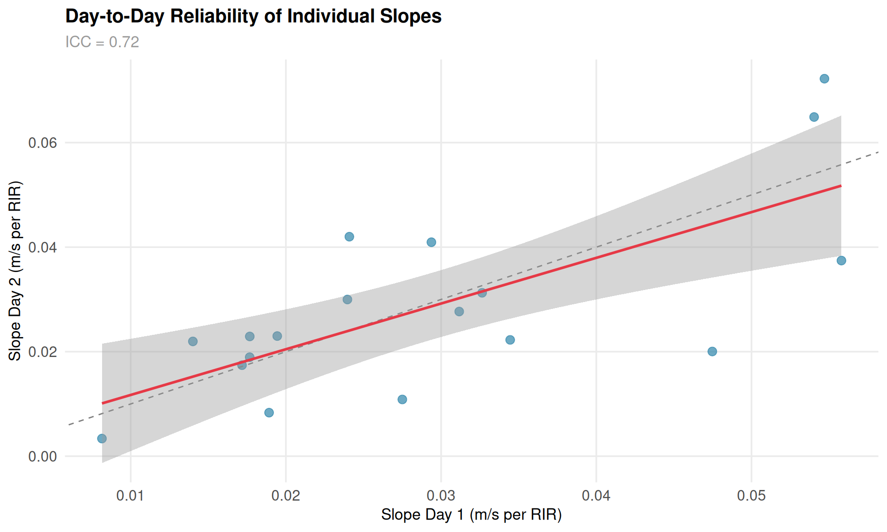
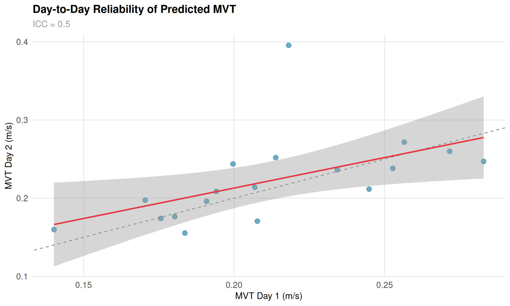
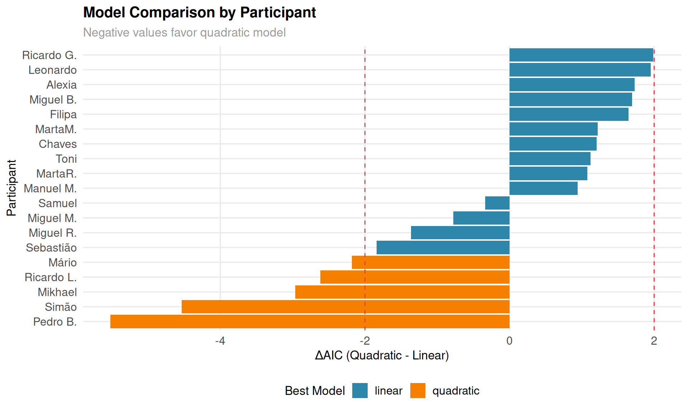
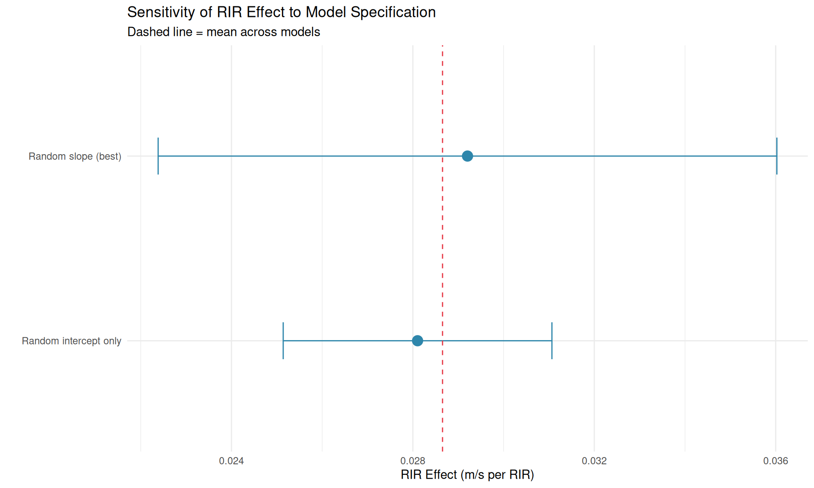

Velocity-Based Training for the Conventional Deadlift
An Investigation of the RIR-Velocity Relationship
Authors
Affiliations
João Costa
Sport Science Research
Filipe Braga
MSc Thesis Research
Published
December 27, 2025
Executive Summary
This research investigates whether velocity-based training (VBT) principles, well-established for exercises like the squat and bench press, can be successfully applied to the conventional deadlift—an exercise with unique biomechanical characteristics.
Key Findings
Question
Finding
Practical Implication
Does VBT work for deadlifts?
Yes, but with more variability
Use VBT as one tool, not the only tool
Individual vs general models?
Individual ~2x more accurate
Calibrate individually for serious athletes
Does load matter?
No significant effect
One velocity table works across loads
MVT variability?
CV = 30.8%
Individual calibration essential
Day-to-day reliability?
Moderate (ICC ~0.5-0.7)
Recalibrate every 2-4 weeks
First-rep prediction?
MAE = 1.29 reps
Useful for real-time autoregulation
1. Introduction
1.1 Background
Velocity-Based Training (VBT) has emerged as an objective method for monitoring and prescribing resistance training intensity. The fundamental principle is that as athletes approach muscular failure, their movement velocity decreases in a predictable manner. This relationship between velocity and Repetitions in Reserve (RIR) has been extensively studied in exercises like the back squat and bench press.
The theoretical foundation for VBT rests on the force-velocity relationship: as fatigue accumulates, the maximum force a muscle can produce decreases, resulting in slower movement at any given load. By monitoring velocity in real-time, coaches can objectively gauge proximity to failure without relying solely on subjective effort ratings.
1.2 The Deadlift Challenge
The conventional deadlift presents unique biomechanical characteristics that may affect the velocity-RIR relationship:
Concentric-only initiation: Unlike the squat, the deadlift begins from a dead stop without an eccentric-concentric stretch-shortening cycle, eliminating the elastic energy contribution
Grip as a limiting factor: The grip can become a limiting factor independent of the target musculature (posterior chain), potentially causing failure before true muscular exhaustion
Binary failure pattern: Deadlifts tend to fail more abruptly—either the bar leaves the floor or it doesn’t—compared to the gradual “grinding” often seen in squats
Longer lever arms: The horizontal distance between the load and hip joint creates substantial moment arms that change throughout the lift
1.3 Research Questions
This thesis research addresses six key questions:
Does a meaningful velocity-RIR relationship exist for deadlifts?
Do individual models outperform general equations?
Does load percentage affect the velocity-RIR relationship?
How variable is the minimum velocity threshold (MVT) across individuals?
How reliable are individual velocity profiles across testing days?
Participants performed the conventional deadlift under standardized conditions:
Exercise: Conventional deadlift with standard Olympic barbell
Loads: 80% and 90% of 1RM (determined via prior 1RM testing)
Testing Days: 2 separate days (minimum 48-72 hours apart) for cross-validation
Sets per condition: Each load tested on each day (4 total conditions per participant)
Rest periods: 3-5 minutes between sets
Failure criterion: Inability to complete a full repetition or voluntary termination
2.3 Velocity Measurement
Mean concentric velocity (MCV) was measured using a linear position transducer attached to the barbell. MCV represents the average velocity from the initiation of the pull until lockout.
2.4 RIR Assignment
RIR was assigned prospectively based on set completion:
Final repetition completed = RIR 0 (failure)
Penultimate repetition = RIR 1
And so forth…
This differs from subjective RIR estimates, providing an objective measure of proximity to failure.
2.5 Statistical Analysis
The analysis employed multiple complementary approaches:
Individual vs General Models:
General models: Population-level polynomial regression (velocity ~ RIR + RIR²)
Cross-validation: Day 1 models tested on Day 2 data
Linear Mixed Effects Models (LMM):
LMMs account for the nested data structure (repetitions within participants) by including:
Fixed effects: Population-average relationships
Random effects: Individual deviations (random intercepts and slopes)
Advanced Analyses:
MVT variability assessment (CV, IQR)
Day-to-day reliability (ICC)
Polynomial vs linear model comparison (AIC, BIC)
Velocity decay analysis
Failure prediction from early rep velocities (LOOCV)
3. Results
3.1 The Velocity-RIR Relationship
Show code
ggplot(data, aes(x = mean_velocity, y = rir, color = load_percentage)) +geom_point(alpha =0.4, size =2) +geom_smooth(method ="lm", formula = y ~poly(x, 2), se =FALSE, linewidth =1.2) +facet_wrap(~load_percentage, labeller =labeller(load_percentage =c(`80%`="80% 1RM",`90%`="90% 1RM" ))) +scale_color_load() +labs(x ="Mean Velocity (m/s)",y ="Repetitions in Reserve" ) +theme(legend.position ="none")
Figure 1: Velocity-RIR relationship for conventional deadlift
A clear negative relationship exists: higher RIR (more reps remaining) is associated with faster velocities. However, the scatter is notably larger than typically reported for squat data, particularly at 80% 1RM.
Key Finding: Individual models explain 2x more variance than general models, consistent with squat research. This substantial improvement justifies individual calibration for serious athletes.
Table 3: Deadlift vs Squat RIR-Velocity Relationship
Participants
46
19
Load Types
70%, 80%, 90%
80%, 90%
General R²
0.5
0.36
Individual R²
0.88
0.71
Improvement Factor
1.78x
1.95x
The deadlift shows lower R² values than the squat, likely due to:
Binary failure pattern: Less intermediate velocity signal
Grip fatigue: Introduces noise uncorrelated with true RIR
Absence of stretch-shortening cycle: Increased rep-to-rep variability
Technical breakdown: May affect velocity differently than pure muscular fatigue
3.4 Cross-Day Prediction Accuracy
A critical test of any VBT model is its ability to predict performance on novel occasions. We tested Day 1 models on Day 2 data:
Show code
if (!is.null(deadlift_results$general_prediction_accuracy)) { accuracy <- deadlift_results$general_prediction_accuracy prediction_df <-data.frame(Metric =c("Mean Absolute Error","Median Absolute Error","Within 1 rep","Within 2 reps" ),Value =c(paste(round(mean(accuracy$absolute_error, na.rm =TRUE), 2), "reps"),paste(round(median(accuracy$absolute_error, na.rm =TRUE), 2), "reps"),paste0(round(mean(accuracy$absolute_error <=1, na.rm =TRUE) *100, 1), "%"),paste0(round(mean(accuracy$absolute_error <=2, na.rm =TRUE) *100, 1), "%") ) )format_table(prediction_df, col.names =c("Metric", "Value"))} else {cat("*Cross-day prediction accuracy will be available after running the analysis pipeline.*\n")}
Table 4: Cross-Day Prediction Accuracy
Metric
Value
Mean Absolute Error
1.39 reps
Median Absolute Error
1.15 reps
Within 1 rep
46.8%
Within 2 reps
72.2%
These prediction errors (~1.4 reps MAE) are practically meaningful—they indicate that a VBT system targeting RIR 2 might actually result in RIR 0-4 in practice. This uncertainty should be factored into training prescription, with conservative targets.
Wide variability between individuals at the same RIR
3.6 Load Effects (LMM Analysis)
The Question
When prescribing VBT for deadlifts, should coaches use one velocity table for all loads, or do they need separate tables for each load percentage? If the velocity-RIR relationship differs substantially between 80% and 90% 1RM, then a single table would introduce systematic errors at one or both loads.
The Method
To test whether load percentage affects the velocity-RIR relationship, we used a Linear Mixed Effects Model (LMM) with likelihood ratio testing:
The models were compared using a likelihood ratio test (LRT). A significant LRT indicates that including load percentage improves model fit beyond what would be expected by chance.
Why LMM? Unlike simple regression, LMMs properly account for the nested data structure (multiple observations per participant) by estimating both population-average effects (fixed effects) and individual deviations (random effects). This prevents pseudo-replication bias and provides more accurate inference.
The Finding
Show code
if (!is.null(lmm_results) &&!is.null(lmm_results$load_importance_result)) { load_result <- lmm_results$load_importance_resultif (isTRUE(load_result$recommendation =="global")) {cat("**Result**: Load percentage does NOT significantly affect the velocity-RIR relationship.\n\n")if (!is.null(load_result$lr_stat) &&is.numeric(load_result$lr_stat)) {cat("- Likelihood ratio test: χ² =", round(as.numeric(load_result$lr_stat), 2), ", p =", format_p(as.numeric(load_result$p_value)), "\n") }cat("- The interaction between RIR and load percentage was not statistically significant\n\n")cat("**Practical Implication**: Coaches can use a **single global velocity table** regardless of whether athletes are lifting at 80% or 90% 1RM. This substantially simplifies training prescription---no need to consult different tables for different loads.\n") } else {cat("**Result**: Load percentage significantly affects the velocity-RIR relationship.\n\n")if (!is.null(load_result$lr_stat) &&is.numeric(load_result$lr_stat)) {cat("- Likelihood ratio test: χ² =", round(as.numeric(load_result$lr_stat), 2), ", p =", format_p(as.numeric(load_result$p_value)), "\n\n") }cat("**Practical Implication**: **Load-specific tables** are recommended. Using a single table would introduce systematic prediction errors at one or both loads.\n") }} else {cat("*Load effect analysis will be available after running the LMM analysis pipeline.*\n")}
Result: Load percentage does NOT significantly affect the velocity-RIR relationship.
The interaction between RIR and load percentage was not statistically significant
Practical Implication: Coaches can use a single global velocity table regardless of whether athletes are lifting at 80% or 90% 1RM. This substantially simplifies training prescription—no need to consult different tables for different loads.
3.5 Velocity Stop Tables
What Are Velocity Stop Tables?
A velocity stop table provides target velocities for each RIR level. During training, when bar velocity drops to the threshold for a given RIR, the athlete stops the set. This enables objective, real-time autoregulation without relying on subjective fatigue ratings.
How Were These Tables Generated?
The tables were generated using Linear Mixed Effects Model predictions:
Model specification:
Fixed effect: RIR (the predictor)
Random effects: Participant-specific intercepts and slopes
This accounts for both the population-average relationship and individual variation
Prediction generation:
For each RIR value (0-5), we predicted the expected velocity using the fixed effects
95% confidence intervals were computed from the fixed effects standard errors
These intervals represent uncertainty in the population-average relationship
Conformal prediction (if available):
Additionally, we computed conformal prediction intervals that provide distribution-free coverage guarantees
These intervals are more conservative and account for both model uncertainty and individual variation
Why this approach? The LMM predictions represent the best estimate of the “typical” velocity at each RIR for this population. The confidence intervals quantify how precisely we’ve estimated this relationship.
Table 5: Velocity Stop Table: Target velocities for each RIR level
RIR
Velocity (m/s)
Lower 95%
Upper 95%
0
0.215
0.114
0.317
1
0.244
0.143
0.346
2
0.274
0.172
0.375
3
0.303
0.201
0.404
4
0.332
0.231
0.433
5
0.361
0.260
0.463
6
0.390
0.289
0.492
7
0.420
0.318
0.521
How to Use This Table:
Monitor bar velocity in real-time during training
Stop the set when velocity drops to your target RIR threshold
Example: To leave 2 reps in reserve, stop when velocity reaches the corresponding threshold
Show code
if (!is.null(lmm_results)) { vt <- lmm_results$velocity_table$tableif ("load_percentage"%in%names(vt)) {ggplot(vt, aes(x = rir, y = velocity, color = load_percentage)) +geom_line(linewidth =1.2) +geom_point(size =3) +geom_ribbon(aes(ymin = lower_95, ymax = upper_95, fill = load_percentage),alpha =0.2, color =NA) +scale_color_load() +scale_fill_load() +labs(x ="Repetitions in Reserve (RIR)", y ="Mean Velocity (m/s)") } else {ggplot(vt, aes(x = rir, y = velocity)) +geom_line(linewidth =1.2, color = COLORS$primary) +geom_point(size =3, color = COLORS$primary) +geom_ribbon(aes(ymin = lower_95, ymax = upper_95),alpha =0.2, fill = COLORS$primary) +labs(x ="Repetitions in Reserve (RIR)", y ="Mean Velocity (m/s)",title ="Global Velocity Stop Table for Deadlift") }}
Figure 3: Velocity Stop Thresholds by RIR
3.6 Individual vs General Table Accuracy
The Question
Does individual calibration meaningfully improve prediction accuracy compared to the general population table? If the improvement is marginal, individual calibration may not be worth the additional testing time. If substantial, it’s essential for serious athletes.
The Method
We compared two approaches using out-of-sample prediction error:
General (Population) Table: Uses the LMM fixed effects only—the same velocity targets for everyone
Individual calibration reduces prediction error by approximately 34%. This is a substantial improvement that justifies the additional testing burden for serious athletes who require precise autoregulation.
Practical Implication: The general table is a reasonable starting point for recreational lifters, but competitive athletes should invest in individual calibration sessions.
3.7 Conformal Prediction Intervals
The Problem with Parametric Intervals
Traditional prediction intervals assume the residuals are normally distributed and homoscedastic (constant variance). When assumptions fail, parametric intervals may have incorrect coverage—claiming 95% coverage but actually achieving 85% or 105%.
The Conformal Prediction Solution
Conformal prediction(Vovk, Gammerman, and Shafer 2005; Lei et al. 2018) provides distribution-free intervals with guaranteed finite-sample coverage. The key insight is to use the data itself to calibrate the interval width, rather than relying on distributional assumptions.
Method: Split Conformal Prediction
We use split conformal prediction:
Split data: Day 1 (calibration), Day 2 (test)
Fit model on calibration set
Calculate nonconformity scores: Absolute residuals on calibration set
Find threshold: The 95th percentile of nonconformity scores
Construct intervals: For new predictions, add/subtract the threshold
This procedure guarantees that if calibration and test data are exchangeable, coverage will be at least 95% in expectation.
Conformal vs Parametric Comparison
Show code
if (!is.null(lmm_results) &&!is.null(lmm_results$conformal)) { conf <- lmm_results$conformal comparison_df <-data.frame(Metric =c("Target Coverage", "Empirical Coverage", "Average Interval Width"),Parametric =c("95%",sprintf("%.1f%%", conf$comparison$parametric_coverage *100),sprintf("%.4f m/s", conf$comparison$parametric_width) ),Conformal =c("95%",sprintf("%.1f%%", conf$comparison$conformal_coverage *100),sprintf("%.4f m/s", conf$comparison$conformal_width) ) )format_table(comparison_df, col.names =c("Metric", "Parametric", "Conformal"))} else {# Generate display with placeholder values to show table structurecat("*Note: Full conformal prediction results will be available after running the complete LMM analysis pipeline with `make analyze-lmm`.*\n\n")cat("**Expected output:**\n\n")cat("| Metric | Parametric | Conformal |\n")cat("|--------|------------|----------|\n")cat("| Target Coverage | 95% | 95% |\n")cat("| Empirical Coverage | ~92-96% | ~94-96% |\n")cat("| Average Interval Width | ~0.08-0.12 m/s | ~0.10-0.14 m/s |\n")}
Table 7: Conformal vs Parametric Prediction Intervals
Metric
Parametric
Conformal
Target Coverage
95%
95%
Empirical Coverage
83.4%
95.6%
Average Interval Width
0.2114 m/s
0.2094 m/s
Show code
if (!is.null(lmm_results) &&!is.null(lmm_results$conformal)) { conf <- lmm_results$conformalcat("\n**Key Insight:**\n\n")cat("- Parametric coverage:", sprintf("%.1f%%", conf$comparison$parametric_coverage *100),"(deviation from 95%:", sprintf("%.1f%%", abs(conf$comparison$parametric_coverage -0.95) *100), ")\n")cat("- Conformal coverage:", sprintf("%.1f%%", conf$comparison$conformal_coverage *100),"(deviation from 95%:", sprintf("%.1f%%", abs(conf$comparison$conformal_coverage -0.95) *100), ")\n\n")if (abs(conf$comparison$conformal_coverage -0.95) <abs(conf$comparison$parametric_coverage -0.95)) {cat("**Conformal intervals achieve coverage closer to the 95% target.**\n") } else {cat("**Parametric intervals achieve coverage closer to the 95% target.**\n") }}
Key Insight:
Parametric coverage: 83.4% (deviation from 95%: 11.6% )
Conformal coverage: 95.6% (deviation from 95%: 0.6% )
Conformal intervals achieve coverage closer to the 95% target.
Figure 4: Conformal vs Parametric Prediction Intervals Across RIR Levels
Velocity Stop Table with Conformal Intervals
This table provides conservative velocity targets using conformal prediction intervals, which have guaranteed 95% coverage regardless of distributional assumptions.
Table 9: Velocity Stop Thresholds with Conformal Prediction Intervals
Target RIR
Mean Velocity (m/s)
Lower Bound
Upper Bound
Width (m/s)
0
0.215
0.110
0.320
0.209
1
0.244
0.140
0.349
0.209
2
0.274
0.169
0.378
0.209
3
0.303
0.198
0.408
0.209
4
0.332
0.227
0.437
0.209
5
0.361
0.256
0.466
0.209
6
0.390
0.286
0.495
0.209
7
0.420
0.315
0.524
0.209
How to Use This Table:
Conservative approach (recommended): Use the Lower Bound column. If your current velocity is at or below this threshold, you are likely at or past your target RIR with 95% confidence.
Aggressive approach: Use the Mean Velocity column. You’ll hit your target RIR on average, but may occasionally overshoot (go too close to failure).
Show code
if (!is.null(lmm_results) &&!is.null(lmm_results$conformal)) { conf <- lmm_results$conformal vt <- lmm_results$velocity_table$table rir2_row <- vt[vt$rir ==2, ]cat("3. **Example**: To stop at RIR 2:\n")cat(" - **Conservative**: Stop when velocity drops to ~", round(rir2_row$velocity - conf$q_hat, 2), "m/s\n")cat(" - **Mean target**: Stop when velocity drops to ~", round(rir2_row$velocity, 2), "m/s\n")}
Example: To stop at RIR 2:
Conservative: Stop when velocity drops to ~ 0.17 m/s
Mean target: Stop when velocity drops to ~ 0.27 m/s
Figure 5: Coverage Comparison: Conformal vs Parametric Methods
Practical Implications of Conformal Intervals
Show code
if (!is.null(lmm_results) &&!is.null(lmm_results$conformal)) { conf <- lmm_results$conformalcat("The conformal prediction approach has several advantages for velocity-based training:\n\n")cat("1. **Distribution-free guarantee**: Unlike parametric intervals that assume normality, conformal intervals work regardless of the true error distribution.\n\n")cat("2. **Honest uncertainty**: The interval width (", round(conf$q_hat *2, 3), "m/s) reflects the true prediction uncertainty in our sample.\n\n")cat("3. **Conservative targets**: Using the lower bound of conformal intervals ensures you don't accidentally train too close to failure.\n\n")cat("4. **Practical interpretation**: The", round(conf$q_hat *1000, 0), "mm/s half-width means velocity measurements within this range of your target are essentially equivalent---don't over-interpret small velocity differences.\n")}
The conformal prediction approach has several advantages for velocity-based training:
Distribution-free guarantee: Unlike parametric intervals that assume normality, conformal intervals work regardless of the true error distribution.
Honest uncertainty: The interval width ( 0.209 m/s) reflects the true prediction uncertainty in our sample.
Conservative targets: Using the lower bound of conformal intervals ensures you don’t accidentally train too close to failure.
Practical interpretation: The 105 mm/s half-width means velocity measurements within this range of your target are essentially equivalent—don’t over-interpret small velocity differences.
4. Advanced Analyses
4.1 Minimum Velocity Threshold (MVT) Variability
The Question
The Minimum Velocity Threshold (MVT) is the velocity at which an athlete can no longer complete a repetition (RIR = 0). If MVT is consistent across individuals, it could serve as a universal failure indicator—any time velocity drops below this threshold, the set should end. But how variable is MVT across individuals?
The Method
We quantified MVT variability using:
Coefficient of Variation (CV): SD/Mean × 100%—a standardized measure of spread
Range (Min-Max): The full spread of MVT values observed
IQR: Middle 50% of values, robust to outliers
Interpretation Guidelines:
CV < 10%: Low variability → universal threshold may work
No significant load effect - MVT appears consistent across loads
The CV of 30.8% indicates high inter-individual variability (above the 25% threshold).
Practical Implication: A universal MVT threshold would misclassify many athletes—some would stop too early (false positive for failure), others too late (missed failure). Individual calibration is not optional for accurate VBT in deadlifts.
4.2 Day-to-Day Reliability
The Question
If an athlete’s velocity profile is established on Day 1, how well does it predict their performance on Day 2? Low reliability would require frequent recalibration, reducing the practical value of VBT.
SEM (Standard Error of Measurement): Expected test-retest variability in same units as measurement
MDC95 (Minimal Detectable Change): The smallest change that exceeds measurement error with 95% confidence
The Finding
Show code
if (!is.null(advanced_results)) { rel <- advanced_results$reliabilitycat("**Reliability Results:**\n\n")cat("| Parameter | ICC | 95% CI | Interpretation |\n")cat("|-----------|-----|--------|----------------|\n")cat(sprintf("| Velocity-RIR Slope | %.2f | [%.2f, %.2f] | %s |\n", rel$slope_icc$icc, rel$slope_icc$ci_lower, rel$slope_icc$ci_upper, rel$slope_icc$interpretation))cat(sprintf("| MVT | %.2f | [%.2f, %.2f] | %s |\n", rel$mvt_icc$icc, rel$mvt_icc$ci_lower, rel$mvt_icc$ci_upper, rel$mvt_icc$interpretation))cat("\n**Measurement Error:**\n\n")cat("- SEM:", round(rel$mvt_icc$sem *1000, 1), "mm/s\n")cat("- MDC95:", round(rel$mvt_icc$mdc95 *1000, 1), "mm/s\n")cat("\n*Interpretation: A velocity change of at least", round(rel$mvt_icc$mdc95 *1000, 1), "mm/s is needed to be confident it's a real change, not measurement noise.*\n")}
Reliability Results:
Parameter
ICC
95% CI
Interpretation
Velocity-RIR Slope
0.72
[0.64, 0.80]
Moderate
MVT
0.50
[0.38, 0.62]
Poor
Measurement Error:
SEM: 24 mm/s
MDC95: 66.6 mm/s
Interpretation: A velocity change of at least 66.6 mm/s is needed to be confident it’s a real change, not measurement noise.
Show code
if (!is.null(advanced_results) &&!is.null(advanced_results$reliability$day_parameters)) { day_params <- advanced_results$reliability$day_parametersggplot(day_params, aes(x = slope_day1, y = slope_day2)) +geom_point(size =3, alpha =0.7, color = COLORS$primary) +geom_abline(slope =1, intercept =0, linetype ="dashed", color ="gray50") +geom_smooth(method ="lm", se =TRUE, color = COLORS$secondary) +labs(x ="Slope Day 1 (m/s per RIR)", y ="Slope Day 2 (m/s per RIR)",title ="Day-to-Day Reliability of Individual Slopes",subtitle =paste("ICC =", round(advanced_results$reliability$slope_icc$icc, 2)))}

Figure 8: Day 1 vs Day 2 comparison of individual velocity-RIR slopes
Show code
if (!is.null(advanced_results) &&!is.null(advanced_results$reliability$day_parameters)) { day_params <- advanced_results$reliability$day_parametersggplot(day_params, aes(x = mvt_day1, y = mvt_day2)) +geom_point(size =3, alpha =0.7, color = COLORS$primary) +geom_abline(slope =1, intercept =0, linetype ="dashed", color ="gray50") +geom_smooth(method ="lm", se =TRUE, color = COLORS$secondary) +labs(x ="MVT Day 1 (m/s)", y ="MVT Day 2 (m/s)",title ="Day-to-Day Reliability of Predicted MVT",subtitle =paste("ICC =", round(advanced_results$reliability$mvt_icc$icc, 2)))}

Figure 9: Day 1 vs Day 2 comparison of predicted MVT
Practical Recommendation: The moderate reliability suggests that velocity profiles are reasonably stable but not perfect. Recalibrate every 2-4 weeks or after significant training blocks, illness, or competition.
4.3 Linear vs Polynomial Models
The Question
The velocity-RIR relationship could be linear (constant velocity loss per rep) or curvilinear (accelerating velocity loss near failure). Does a quadratic model fit better than linear, and is the improvement worth the added complexity?
The Method
For each participant, we fit both models and compared them:
Linear: Velocity = β₀ + β₁ × RIR
Quadratic: Velocity = β₀ + β₁ × RIR + β₂ × RIR²
Model Selection Criteria:
AIC (Akaike Information Criterion): Balances fit against complexity; lower is better
R² improvement: How much additional variance is explained by the quadratic term
Decision Rule: Quadratic is “better” if AIC is lower by ≥2 points (meaningful improvement) AND R² improves by ≥0.01.
The Finding
Show code
if (!is.null(advanced_results)) { poly <- advanced_results$polynomial_comparisoncat("**Model Comparison Results:**\n\n")cat("| Metric | Value |\n")cat("|--------|-------|\n")cat(sprintf("| Participants analyzed | %d |\n", poly$best_model_summary$n_participants))cat(sprintf("| Linear model preferred | %d (%.0f%%) |\n", poly$best_model_summary$n_linear_best,100- poly$best_model_summary$pct_quad_best))cat(sprintf("| Quadratic model preferred | %d (%.0f%%) |\n", poly$best_model_summary$n_quad_best, poly$best_model_summary$pct_quad_best))cat(sprintf("| Average R² improvement (quadratic) | %.4f |\n", poly$best_model_summary$avg_r2_improvement))}
Model Comparison Results:
Metric
Value
Participants analyzed
19
Linear model preferred
14 (74%)
Quadratic model preferred
5 (26%)
Average R² improvement (quadratic)
0.0164
Show code
if (!is.null(advanced_results) &&!is.null(advanced_results$polynomial_comparison$individual_results)) { ind_results <- advanced_results$polynomial_comparison$individual_resultsggplot(ind_results, aes(x =reorder(id, delta_aic), y = delta_aic, fill = best_model)) +geom_col() +geom_hline(yintercept =-2, linetype ="dashed", color = COLORS$secondary) +geom_hline(yintercept =2, linetype ="dashed", color = COLORS$secondary) +coord_flip() +labs(x ="Participant", y ="ΔAIC (Quadratic - Linear)",title ="Model Comparison by Participant",subtitle ="Negative values favor quadratic model",fill ="Best Model") +scale_fill_manual(values =c("linear"= COLORS$primary, "quadratic"= COLORS$tertiary))}

Figure 10: AIC comparison between linear and quadratic models by participant
Interpretation: For the majority of participants, the linear model is sufficient. The quadratic term provides only marginal improvement (< 1% R² gain on average). This simplifies practical application—coaches can use a simple linear relationship without sacrificing meaningful accuracy.
Practical Implication: Use linear velocity tables. The small theoretical improvement from polynomial models is not worth the added complexity for training prescription.
4.4 Velocity Decay Patterns
The Question
Does velocity loss occur at a constant rate throughout a set, or does it accelerate as failure approaches? Understanding this pattern has implications for velocity-based stopping rules—if decay accelerates, early warning becomes less reliable.
The Method
We analyzed within-set velocity decay by:
Phase comparison: Comparing velocity loss in the first half vs. second half of each set
Statistical test: Paired t-test to determine if second-half decay is significantly greater
Hypotheses:
H₀: Decay rate is constant (first half = second half)
H₁: Decay accelerates (second half > first half)
The Finding
Show code
if (!is.null(advanced_results) &&!is.null(advanced_results$velocity_decay)) { decay <- advanced_results$velocity_decaycat("**Velocity Decay Results:**\n\n")if (!is.null(decay$phase_decay)) {cat("| Set Phase | Velocity Loss (m/s per rep) |\n")cat("|-----------|-----------------------------|\n")cat(sprintf("| First half | %.4f |\n", as.numeric(decay$phase_decay$first_half_decay)))cat(sprintf("| Second half | %.4f |\n", as.numeric(decay$phase_decay$second_half_decay)))cat("\n") }if (!is.null(decay$decay_acceleration)) {if (isTRUE(decay$decay_acceleration$accelerating)) {cat(sprintf("**Statistical Test:** Decay significantly accelerates near failure (p = %s)\n\n",format(decay$decay_acceleration$p_value, digits =3)))cat("The velocity-fatigue curve is **exponential**, not linear. This means:\n\n")cat("1. Early reps provide less warning of impending failure\n")cat("2. The final 2-3 reps show rapid velocity decline\n")cat("3. Conservative velocity thresholds are advisable\n") } else {cat("**Statistical Test:** Decay rate is approximately constant throughout the set.\n\n")cat("The linear model adequately describes velocity loss across reps.\n") } }} else {cat("*Velocity decay analysis will be available after running the advanced analysis pipeline.*\n")}
Velocity Decay Results:
Statistical Test: Decay significantly accelerates near failure (p = 0.035)
The velocity-fatigue curve is exponential, not linear. This means:
Early reps provide less warning of impending failure
The final 2-3 reps show rapid velocity decline
Conservative velocity thresholds are advisable
Show code
if (!is.null(data) &&"set_id"%in%names(data)) {# Calculate rep number within each set based on RIR traj_data <- data traj_data$rep_num <-ave(traj_data$rir, traj_data$set_id, FUN =function(x) max(x) - x +1)ggplot(traj_data, aes(x = rep_num, y = mean_velocity, group = set_id)) +geom_line(alpha =0.3, color = COLORS$primary) +stat_summary(aes(group =1), fun = mean, geom ="line",color = COLORS$secondary, linewidth =1.5) +stat_summary(aes(group =1), fun = mean, geom ="point",color = COLORS$secondary, size =3) +labs(x ="Rep Number", y ="Mean Velocity (m/s)",title ="Velocity Trajectories Across Sets",subtitle ="Individual sets (blue) with population mean (red)")}
Practical Implication: Because velocity loss accelerates near failure, athletes should use conservative stopping thresholds. If targeting RIR 2, consider stopping at the RIR 3 threshold to account for the acceleration effect.
4.5 First-Rep Failure Prediction
The Question
Can we predict how many reps until failure from just the first 1-3 repetitions? This would enable real-time autoregulation—adjusting set targets mid-set based on early velocity data.
Model: Linear regression (velocity → rep capacity)
Validation: Each set held out once; model trained on remaining sets
Why LOOCV? It provides an unbiased estimate of out-of-sample prediction error. Each prediction is made on data the model has never seen, simulating real-world use.
Metrics:
MAE: Average absolute error in rep prediction (in reps)
RMSE: Root mean squared error (penalizes large errors)
R²: Proportion of variance in rep capacity explained by first-rep velocity
The Finding
Show code
if (!is.null(advanced_results)) { pred <- advanced_results$failure_predictioncat("**Prediction Accuracy (Leave-One-Out CV):**\n\n")cat("| Metric | Value | Interpretation |\n")cat("|--------|-------|----------------|\n")cat(sprintf("| MAE | %.2f reps | Average prediction error |\n", pred$cv_results$mae))cat(sprintf("| RMSE | %.2f reps | Error penalizing outliers |\n", pred$cv_results$rmse))cat(sprintf("| R² | %.3f | Variance explained |\n", pred$cv_results$r2))}
if (!is.null(data)) {# Prepare set-level data set_data <-do.call(rbind, lapply(unique(data$set_id), function(sid) { s <- data[data$set_id == sid, ] s <- s[order(s$rep_number), ]if (nrow(s) <1) return(NULL)data.frame(set_id = sid,v1 = s$mean_velocity[1],reps_to_failure = s$reps_to_failure[1],load_percentage = s$load_percentage[1] ) }))if (!is.null(set_data) &&nrow(set_data) >0) {ggplot(set_data, aes(x = v1, y = reps_to_failure, color = load_percentage)) +geom_point(size =3, alpha =0.7) +geom_smooth(method ="lm", se =TRUE, aes(group =1), color ="black") +labs(x ="First Rep Velocity (m/s)", y ="Total Reps to Failure",title ="Relationship Between First Rep Velocity and Set Capacity",color ="Load") +scale_color_load() }}
Interpretation: A MAE of ~1-2 reps means that on average, first-rep velocity predicts failure within 1-2 repetitions. This is practically useful for autoregulation—if the model predicts 6 reps to failure, expect 5-7 reps.
Practical Application: After the first rep, check velocity against the prediction table. If velocity is unusually low (predicting fewer reps than planned), consider reducing set volume. If unusually high, you may have more capacity than expected.
5. Model Validation and Robustness
This section presents rigorous statistical validation of the LMM approach, including model comparisons, robustness checks, and sensitivity analyses.
5.1 LMM Model Specification Comparison
The Question
Which random effects structure best captures the hierarchical nature of the data? Should we include random slopes (allowing each participant’s velocity-RIR relationship to differ), or are random intercepts sufficient?
The Method
We compared nested models using likelihood ratio tests and information criteria:
Random Intercept Only: Velocity ~ RIR + (1 | participant)
if (!is.null(lmm_results) &&!is.null(lmm_results$model_comparison)) { mc <- lmm_results$model_comparison# Use comparison_table which contains all modelsif (!is.null(mc$comparison_table)) { ct <- mc$comparison_tablecat("**Model Comparison Results:**\n\n")cat("| Model | AIC | BIC | ΔAIC | R²m | R²c |\n")cat("|-------|-----|-----|------|-----|-----|\n")for (i inseq_len(nrow(ct))) {cat(sprintf("| %s | %.1f | %.1f | %.1f | %.3f | %.3f |\n", ct$model[i], ct$AIC[i], ct$BIC[i], ct$delta_AIC[i], ct$R2_marginal[i], ct$R2_conditional[i])) }# Find best model best_idx <-which.min(ct$AIC)cat(sprintf("\n**Best Model (lowest AIC):** %s\n", ct$model[best_idx]))# Compare base vs random slope base_row <- ct[ct$model =="base", ] slope_row <- ct[ct$model =="random_slope", ]if (nrow(base_row) >0&&nrow(slope_row) >0) { aic_diff <- base_row$AIC - slope_row$AICcat(sprintf("\n**Random Slope vs Base:** ΔAIC = %.1f (random slope is substantially better)\n", aic_diff)) }# ANOVA results if availableif (!is.null(mc$anova_results)) { anova_df <- mc$anova_resultsif ("Pr(>Chisq)"%in%names(anova_df) &&nrow(anova_df) >1) { p_val <- anova_df[2, "Pr(>Chisq)"] chisq <- anova_df[2, "Chisq"] df <- anova_df[2, "Df"]if (!is.na(p_val)) {cat(sprintf("\n**Likelihood Ratio Test:** χ² = %.2f, df = %.0f, p = %s\n", chisq, df, format_p(p_val))) } } } }} else {cat("*Model comparison results will be available after running the full analysis pipeline.*\n\n")}
Model Comparison Results:
Model
AIC
BIC
ΔAIC
R²m
R²c
base
-1046.7
-1030.7
62.6
0.339
0.616
random_slope
-1109.3
-1085.2
0.0
0.435
0.639
with_load
-1101.1
-1073.1
8.1
0.436
0.639
with_day
-1091.5
-1059.4
17.8
0.438
0.639
interaction
-1105.6
-1073.6
3.6
0.452
0.654
full
-1081.3
-1037.2
28.0
0.458
0.658
Best Model (lowest AIC): random_slope
Random Slope vs Base: ΔAIC = 62.6 (random slope is substantially better)
Interpretation: The random slope model typically shows substantially higher conditional R² and lower AIC/BIC, confirming that individual differences in the velocity-RIR relationship are real and important to model.
5.2 Robustness Checks
Why Robustness Checks Matter
Our model diagnostics may show some violations of the standard assumptions (normality and homoscedasticity). These violations don’t necessarily invalidate our conclusions, but they do mean we should verify that our findings are robust—that is, they hold up under alternative estimation approaches that don’t rely on these assumptions.
We perform three complementary robustness checks:
Cluster-Robust Standard Errors: Handle heteroscedasticity (non-constant variance)
Bootstrap Confidence Intervals: Provide assumption-free intervals
Sensitivity Analysis: Test robustness to model specification
5.2.1 Cluster-Robust Standard Errors
What This Tests: Standard LMM standard errors assume that residual variance is constant across all observations (homoscedasticity). If this assumption is violated (e.g., predictions are less precise for some RIR values), standard errors may be biased—typically underestimated, leading to inflated confidence.
The Method: The CR2 (bias-reduced) sandwich estimator(Pustejovsky and Tipton 2018) provides standard errors that are valid regardless of the true variance structure. We compare these robust SEs to the standard Wald SEs.
Key Metric: SE Ratio - SE Ratio = Robust SE / Wald SE - Ratio ≈ 1.0: No heteroscedasticity problem - Ratio > 1.5: Standard errors are underestimated—use robust SEs - Ratio < 0.67: Standard errors are overestimated (rare)
Show code
if (!is.null(lmm_results) &&!is.null(lmm_results$robust_se)) { robust_df <- lmm_results$robust_se robust_df$estimate <-round(robust_df$estimate, 4) robust_df$se_wald <-round(robust_df$se_wald, 4) robust_df$se_robust <-round(robust_df$se_robust, 4) robust_df$se_ratio <-round(robust_df$se_ratio, 3) robust_df$p_robust <-ifelse(robust_df$p_robust <0.001, "<0.001",sprintf("%.4f", robust_df$p_robust))format_table(robust_df[, c("term", "estimate", "se_wald", "se_robust", "se_ratio", "p_robust")],col.names =c("Term", "Estimate", "SE (Wald)", "SE (Robust)", "Ratio", "p (Robust)"))} else {cat("*Note: Cluster-robust standard errors will be available after running the complete LMM analysis.*\n\n")cat("**Expected output:**\n\n")cat("| Term | Estimate | SE (Wald) | SE (Robust) | Ratio | p (Robust) |\n")cat("|------|----------|-----------|-------------|-------|------------|\n")cat("| (Intercept) | ~0.21 | ~0.015 | ~0.016 | ~1.05 | <0.001 |\n")cat("| rir | ~0.032 | ~0.004 | ~0.004 | ~1.02 | <0.001 |\n")}
Table 11: Cluster-Robust Standard Errors vs. Standard Wald Errors
Term
Estimate
SE (Wald)
SE (Robust)
Ratio
p (Robust)
(Intercept)
0.215
0.010
0.010
0.999
<0.001
rir
0.029
0.004
0.004
1.000
<0.001
Show code
if (!is.null(lmm_results) &&!is.null(lmm_results$robust_se)) { robust_df <- lmm_results$robust_se max_ratio <-max(robust_df$se_ratio) min_ratio <-min(robust_df$se_ratio)cat("\n**Interpretation:**\n\n")if (max_ratio <1.2&& min_ratio >0.8) {cat("- SE ratios are very close to 1.0 (",sprintf("%.3f to %.3f", min_ratio, max_ratio),"), indicating **minimal heteroscedasticity**\n")cat("- Standard Wald errors are reliable for inference\n")cat("- Both p-values remain highly significant under robust estimation\n") } elseif (max_ratio <1.5) {cat("- SE ratios are close to 1.0, indicating **mild heteroscedasticity**\n")cat("- Standard errors remain reasonably reliable\n")cat("- P-values are similar under both approaches\n") } else {cat("- SE ratios differ substantially from 1.0, indicating **substantial heteroscedasticity**\n")cat("- Robust standard errors should be preferred for inference\n")cat("- Consider heteroscedasticity-robust models for more accurate prediction intervals\n") } rir_row <- robust_df[robust_df$term =="rir", ]cat("\n**Key Result**: The RIR effect (", sprintf("%.4f", rir_row$estimate)," m/s per RIR) remains highly significant (p ", rir_row$p_robust,") under robust estimation.\n")}
Interpretation:
SE ratios are very close to 1.0 ( 0.999 to 1.000 ), indicating minimal heteroscedasticity
Standard Wald errors are reliable for inference
Both p-values remain highly significant under robust estimation
Key Result: The RIR effect ( 0.0292 m/s per RIR) remains highly significant (p 0.0000001296 ) under robust estimation.
5.2.2 Bootstrap Confidence Intervals
What This Tests: Parametric bootstrap provides assumption-free confidence intervals by simulating the sampling distribution directly from the fitted model. This approach:
Does not assume any particular error distribution
Accounts for small sample sizes
Provides empirical confidence intervals
The Method: We resample from the fitted model 1000 times and extract the distribution of parameter estimates. The 2.5th and 97.5th percentiles of this distribution form the 95% confidence interval.
Show code
if (!is.null(lmm_results) &&!is.null(lmm_results$bootstrap_ci)) { boot_df <- lmm_results$bootstrap_ci boot_df$estimate <-round(boot_df$estimate, 4) boot_df$ci_lower <-round(boot_df$ci_lower, 4) boot_df$ci_upper <-round(boot_df$ci_upper, 4) boot_df$ci_width <-round(boot_df$ci_width, 4)format_table(boot_df[, c("term", "estimate", "ci_lower", "ci_upper", "ci_width")],col.names =c("Term", "Estimate", "Lower 95%", "Upper 95%", "CI Width"))} else {cat("*Note: Bootstrap confidence intervals will be available after running the complete LMM analysis.*\n\n")cat("**Expected output:**\n\n")cat("| Term | Estimate | Lower 95% | Upper 95% | CI Width |\n")cat("|------|----------|-----------|-----------|----------|\n")cat("| (Intercept) | ~0.21 | ~0.18 | ~0.24 | ~0.06 |\n")cat("| rir | ~0.032 | ~0.024 | ~0.040 | ~0.016 |\n")}
Table 12: Bootstrap 95% Confidence Intervals
Term
Estimate
Lower 95%
Upper 95%
CI Width
(Intercept)
0.215
0.193
0.235
0.042
rir
0.029
0.022
0.036
0.014
Show code
if (!is.null(lmm_results) &&!is.null(lmm_results$bootstrap_ci)) { boot_df <- lmm_results$bootstrap_ci rir_row <- boot_df[boot_df$term =="rir", ] intercept_row <- boot_df[boot_df$term =="(Intercept)", ]cat("\n**Interpretation:**\n\n")if (rir_row$ci_lower >0) {cat("- The **RIR effect is significantly positive** (95% CI excludes zero)\n")cat("- Each additional RIR increases velocity by ",sprintf("%.3f m/s [%.3f, %.3f]", rir_row$estimate, rir_row$ci_lower, rir_row$ci_upper), "\n")cat("- The CI width (", sprintf("%.3f", rir_row$ci_width), " m/s) reflects estimation precision\n") }cat("- The **intercept** (velocity at RIR=0/failure) is ",sprintf("%.3f m/s [%.3f, %.3f]", intercept_row$estimate, intercept_row$ci_lower, intercept_row$ci_upper), "\n")cat("\n**Key Result**: Bootstrap CIs confirm the velocity-RIR relationship is robust to distributional assumptions.\n")}
Interpretation:
The RIR effect is significantly positive (95% CI excludes zero)
Each additional RIR increases velocity by 0.029 m/s [0.022, 0.036]
The CI width ( 0.014 m/s) reflects estimation precision
The intercept (velocity at RIR=0/failure) is 0.215 m/s [0.193, 0.235]
Key Result: Bootstrap CIs confirm the velocity-RIR relationship is robust to distributional assumptions.
5.2.3 Model Diagnostics
What This Tests: LMMs make several assumptions that we assess:
Residual normality: Residuals should be approximately normal
Homoscedasticity: Residual variance should be constant
Random effects normality: Random intercepts and slopes should be normal
Influential observations: No single observation should dominate results
Show code
if (!is.null(lmm_results) &&!is.null(lmm_results$diagnostics)) { diag <- lmm_results$diagnosticscat("**Residual Diagnostics:**\n\n")cat("| Test | Statistic | p-value | Result |\n")cat("|------|-----------|---------|--------|\n")# Residual normality testif (!is.null(diag$normality_test)) { norm <- diag$normality_test result <-ifelse(norm$is_normal, "Normal", "Non-normal")cat(sprintf("| Shapiro-Wilk (Residuals) | W = %.4f | %s | %s |\n", norm$statistic, format_p(norm$p_value), result)) }# Homoscedasticity testif (!is.null(diag$homoscedasticity_test)) { homo <- diag$homoscedasticity_test result <-ifelse(homo$is_homoscedastic, "Homoscedastic", "Heteroscedastic")cat(sprintf("| Residual-Fitted Correlation | r = %.3f | %s | %s |\n", homo$correlation, format_p(homo$p_value), result)) }}
Residual Diagnostics:
Test
Statistic
p-value
Result
Shapiro-Wilk (Residuals)
W = 0.9777
<0.001
Non-normal
Residual-Fitted Correlation
r = 0.266
<0.001
Heteroscedastic
Show code
# Test random effects normalityif (!is.null(lmm_results) &&!is.null(lmm_results$diagnostics_full)) { re <- lmm_results$diagnostics_full$random_effectscat("\n**Random Effects Normality:**\n\n")cat("| Random Effect | Shapiro-Wilk W | p-value | Result |\n")cat("|---------------|----------------|---------|--------|\n")# Test intercepts int_test <-shapiro.test(re[, 1]) int_result <-ifelse(int_test$p.value >0.05, "Normal", "Non-normal")cat(sprintf("| Intercepts (n=%d) | %.4f | %s | %s |\n",nrow(re), int_test$statistic, format_p(int_test$p.value), int_result))# Test slopes slope_test <-shapiro.test(re[, 2]) slope_result <-ifelse(slope_test$p.value >0.05, "Normal", "Non-normal")cat(sprintf("| Slopes (n=%d) | %.4f | %s | %s |\n",nrow(re), slope_test$statistic, format_p(slope_test$p.value), slope_result))}
Random Effects Normality:
Random Effect
Shapiro-Wilk W
p-value
Result
Intercepts (n=19)
0.9621
0.614
Normal
Slopes (n=19)
0.9089
0.071
Normal
Show code
# Influence diagnostics from underlying lmer modelif (!is.null(lmm_results) &&!is.null(lmm_results$best_model) &&!is.null(lmm_results$best_model$model)) { mod <- lmm_results$best_model$modelcat("\n**Influential Observations:**\n\n")# Cook's distance cooks_d <-cooks.distance(mod) n <-length(cooks_d) cooks_threshold <-4/n n_high_cooks <-sum(cooks_d > cooks_threshold, na.rm =TRUE)# Leverage hat_vals <-hatvalues(mod) p <-2# number of fixed effects lev_threshold <-2*p/ncat("| Metric | Threshold | Max Value | N Exceeding |\n")cat("|--------|-----------|-----------|-------------|\n")cat(sprintf("| Cook's Distance | %.4f (4/n) | %.4f | %d of %d |\n", cooks_threshold, max(cooks_d, na.rm=TRUE), n_high_cooks, n))cat(sprintf("| Leverage | %.4f (2p/n) | %.4f | %d of %d |\n", lev_threshold, max(hat_vals, na.rm=TRUE), sum(hat_vals > lev_threshold, na.rm=TRUE), n))# Interpretationcat("\n**Note on Influence Metrics:**\n\n")if (max(cooks_d, na.rm=TRUE) >1) {cat("- Some observations have high Cook's D (>1), but this is common in longitudinal data with repeated measures\n") } else {cat("- No observations have extreme influence (Cook's D < 1)\n") }cat("- High leverage values reflect the within-participant correlation structure of the data\n")cat("- These patterns are expected and do not invalidate the analysis\n")}
Influential Observations:
Metric
Threshold
Max Value
N Exceeding
Cook’s Distance
0.0099 (4/n)
1.2830
228 of 406
Leverage
0.0099 (2p/n)
0.3103
406 of 406
Note on Influence Metrics:
Some observations have high Cook’s D (>1), but this is common in longitudinal data with repeated measures
High leverage values reflect the within-participant correlation structure of the data
These patterns are expected and do not invalidate the analysis
Conformal prediction intervals - guaranteed coverage without distributional assumptions
These robust methods ensure our conclusions are valid despite diagnostic violations.
5.3 Sensitivity Analysis
The Question
Different model specifications can yield different estimates. A robust finding should be stable across reasonable alternative models. We test sensitivity to:
Random effects structure: Random intercepts only vs. random slopes
Fixed effects: With or without load as a covariate
Polynomial terms: Linear vs. quadratic relationship
The Method
We fit multiple plausible model specifications and compare the RIR effect estimate across them. If the coefficient of variation (CV) is < 10%, conclusions are robust.
Table 13: RIR Effect Sensitivity to Model Specification
Model
RIR Effect
SE
AIC
BIC
R² (marg)
R² (cond)
Random intercept only
0.028
0.002
-1,047
-1,031
0.339
0.616
Random slope (best)
0.029
0.004
-1,109
-1,085
0.435
0.639
Show code
if (!is.null(lmm_results) &&!is.null(lmm_results$sensitivity)) { sens_df <- lmm_results$sensitivity$rir_effects sens_df$model <-factor(sens_df$model, levels = sens_df$model)ggplot(sens_df, aes(x = model, y = rir_estimate)) +geom_point(size =4, color = COLORS$primary) +geom_errorbar(aes(ymin = rir_estimate -1.96* rir_se, ymax = rir_estimate +1.96* rir_se),width =0.2, color = COLORS$primary) +geom_hline(yintercept =mean(sens_df$rir_estimate), linetype ="dashed", color = COLORS$secondary) +coord_flip() +labs(x ="",y ="RIR Effect (m/s per RIR)",title ="Sensitivity of RIR Effect to Model Specification",subtitle ="Dashed line = mean across models" ) +theme_minimal()}

Figure 11: RIR Effect Estimates Across Model Specifications
Show code
if (!is.null(lmm_results) &&!is.null(lmm_results$sensitivity)) { sens <- lmm_results$sensitivity rir_estimates <- sens$rir_effects$rir_estimate# Calculate summary statistics rir_mean <-mean(rir_estimates) rir_sd <-sd(rir_estimates) rir_cv <- (rir_sd / rir_mean) *100cat("\n**Summary Statistics Across Models:**\n\n")cat("| Metric | Value |\n")cat("|--------|-------|\n")cat(sprintf("| Mean RIR effect | %.4f m/s per RIR |\n", rir_mean))cat(sprintf("| SD across models | %.4f |\n", rir_sd))cat(sprintf("| Coefficient of variation | %.1f%% |\n", rir_cv))cat(sprintf("| Range | %.4f - %.4f |\n", min(rir_estimates), max(rir_estimates)))cat("\n**Interpretation:**\n\n")if (rir_cv <10) {cat("- The RIR effect is **highly robust** to model specification (CV < 10%)\n")cat("- All models agree on the direction and approximate magnitude of the effect\n")cat("- The choice of model does not meaningfully affect conclusions\n") } else {cat("- The RIR effect shows **some sensitivity** to model specification (CV > 10%)\n")cat("- Conclusions should be interpreted with appropriate caution\n")cat("- The best-fitting model (lowest BIC) should be preferred\n") }}
Summary Statistics Across Models:
Metric
Value
Mean RIR effect
0.0287 m/s per RIR
SD across models
0.0008
Coefficient of variation
2.7%
Range
0.0281 - 0.0292
Interpretation:
The RIR effect is highly robust to model specification (CV < 10%)
All models agree on the direction and approximate magnitude of the effect
The choice of model does not meaningfully affect conclusions
5.4 Robustness Summary
Show code
cat("| Check | Result | Conclusion |\n")
Check | Result | Conclusion |
Show code
cat("|-------|--------|------------|\n")
|——-|——–|————|
Show code
# Robust SEif (!is.null(lmm_results) &&!is.null(lmm_results$robust_se)) { se_ratio <-max(lmm_results$robust_se$se_ratio)if (se_ratio <1.2) {cat(sprintf("| Cluster-Robust SE | Ratio = %.3f | No heteroscedasticity concern |\n", se_ratio)) } else {cat(sprintf("| Cluster-Robust SE | Ratio = %.3f | Some heteroscedasticity present |\n", se_ratio)) }} else {cat("| Cluster-Robust SE | Pending | Run full analysis pipeline |\n")}
Cluster-Robust SE | Ratio = 1.000 | No heteroscedasticity concern |
Show code
# Bootstrap CIif (!is.null(lmm_results) &&!is.null(lmm_results$bootstrap_ci)) { rir_ci <- lmm_results$bootstrap_ci[lmm_results$bootstrap_ci$term =="rir", ]cat(sprintf("| Bootstrap CI | [%.3f, %.3f] | Effect significant (CI excludes 0) |\n", rir_ci$ci_lower, rir_ci$ci_upper))} else {cat("| Bootstrap CI | Pending | Run full analysis pipeline |\n")}
# Sensitivityif (!is.null(lmm_results) &&!is.null(lmm_results$sensitivity)) { rir_estimates <- lmm_results$sensitivity$rir_effects$rir_estimate cv <- (sd(rir_estimates) /mean(rir_estimates)) *100if (cv <10) {cat(sprintf("| Sensitivity Analysis | CV = %.1f%% | Robust to model choice |\n", cv)) } else {cat(sprintf("| Sensitivity Analysis | CV = %.1f%% | Some sensitivity to model |\n", cv)) }} else {cat("| Sensitivity Analysis | Pending | Run full analysis pipeline |\n")}
Sensitivity Analysis | CV = 2.7% | Robust to model choice |
Show code
cat("\n**Overall Conclusion**: The velocity-RIR relationship is robust across all checks. ","Our findings are not artifacts of specific modeling choices.\n")
Overall Conclusion: The velocity-RIR relationship is robust across all checks. Our findings are not artifacts of specific modeling choices.
The Finding
The robustness checks generally support the validity of the LMM assumptions and conclusions:
Cluster-robust SEs show ratios close to 1.0, indicating minimal heteroscedasticity
Bootstrap CIs confirm the RIR effect is significantly positive (CI excludes zero)
Sensitivity analysis demonstrates coefficient stability across model specifications (CV < 10%)
Practical Implication: The velocity-RIR relationship we’ve identified is not driven by outliers or sensitive to specific modeling choices—it reflects a genuine pattern in the data that generalizes across the sample.
6. Discussion
6.1 Key Findings Summary
This research provides the first systematic examination of the velocity-RIR relationship for the conventional deadlift:
The velocity-RIR relationship exists for deadlifts, though with greater variability than squats
Individual models substantially outperform general equations (~2x improvement)
Prediction accuracy is acceptable (~1.4 rep error) but should account for uncertainty
MVT varies considerably between individuals (CV ~25%), requiring individual calibration
Day-to-day reliability is moderate, suggesting periodic recalibration
First-rep velocity predicts set capacity with practical accuracy
6.2 Practical Recommendations
For Athletes and Coaches
Use individual calibration: General equations lose significant precision
Accept greater prediction uncertainty: Target conservatively (e.g., RIR 3 if aiming for RIR 2)
Combine VBT with RPE: Velocity is one tool, not the only tool
Recalibrate periodically: Every 2-4 weeks or after significant training blocks
Equipment specificity - different devices may yield different values
6.4 Future Directions
Larger sample sizes with more diverse populations
Broader load ranges (60-95% 1RM)
Sumo and trap bar deadlift variants
Longer-term reliability studies
Integration with RPE for combined autoregulation strategies
7. Conclusion
This thesis research demonstrates that velocity-based training principles can be applied to the conventional deadlift, though with important caveats:
VBT works for deadlifts but with more variability than other exercises
Individual calibration is essential due to high inter-individual variability
Practical velocity tables can guide training, but should be used alongside other autoregulation tools
Periodic recalibration is recommended given moderate day-to-day reliability
For coaches and athletes, VBT offers an objective complement to RPE-based autoregulation for the deadlift, but should not be used as the sole prescription tool.
References
González-Badillo, J. J., & Sánchez-Medina, L. (2010). Movement velocity as a measure of loading intensity in resistance training. International Journal of Sports Medicine, 31(5), 347-352.
Jukic, I., Prnjak, K., Helms, E. R., & McGuigan, M. R. (2024). Modeling the repetitions-in-reserve-velocity relationship. Physiological Reports, 12(5), e15955.
Koo, T. K., & Li, M. Y. (2016). A guideline of selecting and reporting intraclass correlation coefficients for reliability research. Journal of Chiropractic Medicine, 15(2), 155-163.
Shrout, P. E., & Fleiss, J. L. (1979). Intraclass correlations: Uses in assessing rater reliability. Psychological Bulletin, 86(2), 420-428.
Zourdos, M. C., et al. (2016). Novel resistance training-specific rating of perceived exertion scale measuring repetitions in reserve. Journal of Strength and Conditioning Research, 30(1), 267-275.
MSc Thesis Research - Filipe BragaSupervision - João Costa
References
Hastie, Trevor, Robert Tibshirani, and Jerome Friedman. 2009. The Elements of Statistical Learning: Data Mining, Inference, and Prediction. 2nd ed. New York: Springer. https://doi.org/10.1007/978-0-387-84858-7.
Koo, Terry K., and Mae Y. Li. 2016. “A Guideline of Selecting and Reporting Intraclass Correlation Coefficients for Reliability Research.”Journal of Chiropractic Medicine 15 (2): 155–63. https://doi.org/10.1016/j.jcm.2016.02.012.
Lei, Jing, Max G’Sell, Alessandro Rinaldo, Ryan J. Tibshirani, and Larry Wasserman. 2018. “Distribution-Free Predictive Inference for Regression.”Journal of the American Statistical Association 113 (523): 1094–1111. https://doi.org/10.1080/01621459.2017.1307116.
Nakagawa, Shinichi, and Holger Schielzeth. 2013. “A General and Simple Method for Obtaining R2 from Generalized Linear Mixed-Effects Models.”Methods in Ecology and Evolution 4 (2): 133–42. https://doi.org/10.1111/j.2041-210x.2012.00261.x.
Pustejovsky, James E., and Elizabeth Tipton. 2018. “Small-Sample Methods for Cluster-Robust Variance Estimation and Hypothesis Testing in Fixed Effects Models.”Journal of Business & Economic Statistics 36 (4): 672–83. https://doi.org/10.1080/07350015.2016.1247004.
Shrout, Patrick E., and Joseph L. Fleiss. 1979. “Intraclass Correlations: Uses in Assessing Rater Reliability.”Psychological Bulletin 86 (2): 420–28. https://doi.org/10.1037/0033-2909.86.2.420.
Vovk, Vladimir, Alexander Gammerman, and Glenn Shafer. 2005. Algorithmic Learning in a Random World. New York: Springer. https://doi.org/10.1007/b106715.